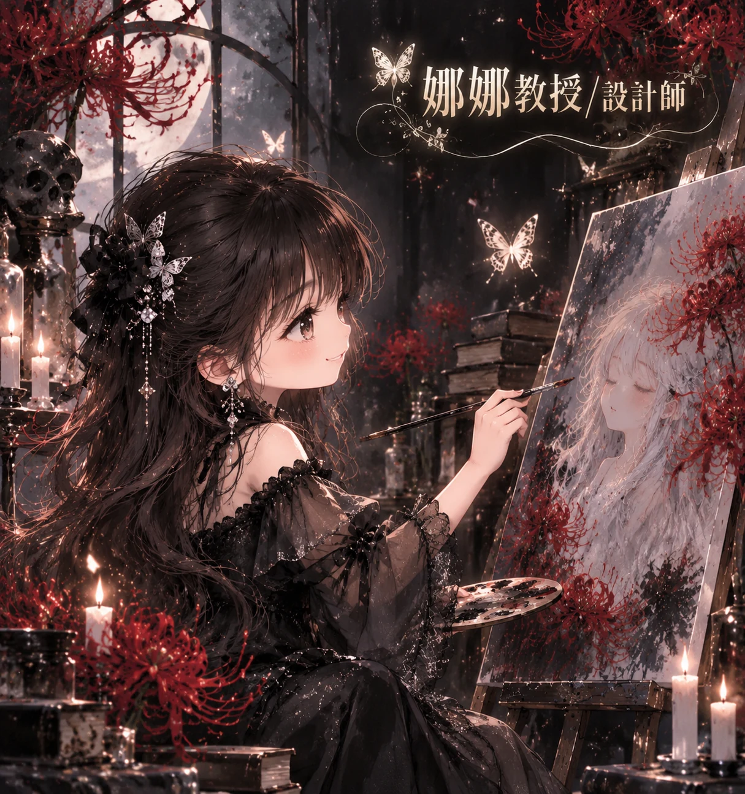

AI × ANOTHER ME · THIRD LAB
🌟 娜娜教授 Big Five 五大人格探索
NBFE-30 · 30 題原創教學探索版｜娜娜教授、華仔教授與 Elara 陪你認識五種連續人格特質。

📖 探索任務說明
五大人格特質（Big Five）包含：開放性 O、盡責性 C、外向性 E、親和性 A、負向情緒傾向 N。每個人都同時具有這五種特質，分數高低並不代表好壞。
全程六關，每關五題，共 30 題。請依照自己平常的情形選擇 1～5 分：1 非常不同意、2 不同意、3 普通、4 同意、5 非常同意。完成後會顯示五向度長條圖、特質解讀、職場優勢、團隊角色、三項職涯發展建議與可下載的個人 PDF。
這是娜娜教授研究島的原創教學自我探索問卷，不是經過信效度驗證的正式 Big Five 心理測量工具，不能作為心理診斷、人事篩選或職業適任判定。部分題目為反向計分；不提供一般人口常模。
🎉 你的五大人格探索報告
Elara：這是一張描述個人傾向的地圖，不是五種固定人格類型，也沒有「最佳人格」。
各向度為 6 題平均分數（1–5 分），已處理反向題。五個向度彼此獨立，並非百分比；不與一般人平均比較。
💼 我的職場優勢與發展方向
🤝 我的團隊合作角色
🧭 給未來自己的三項職涯發展建議
🌹 Another Me：你的團隊合作冒險
思考問題：哪一個特質最能幫助你？哪一個情境會讓你想採取不同做法？人格傾向會隨情境、時間及生活經驗有所表現差異。